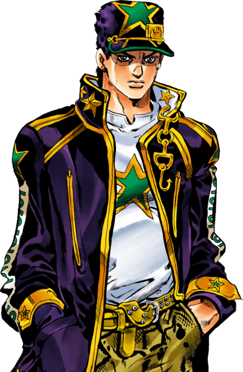
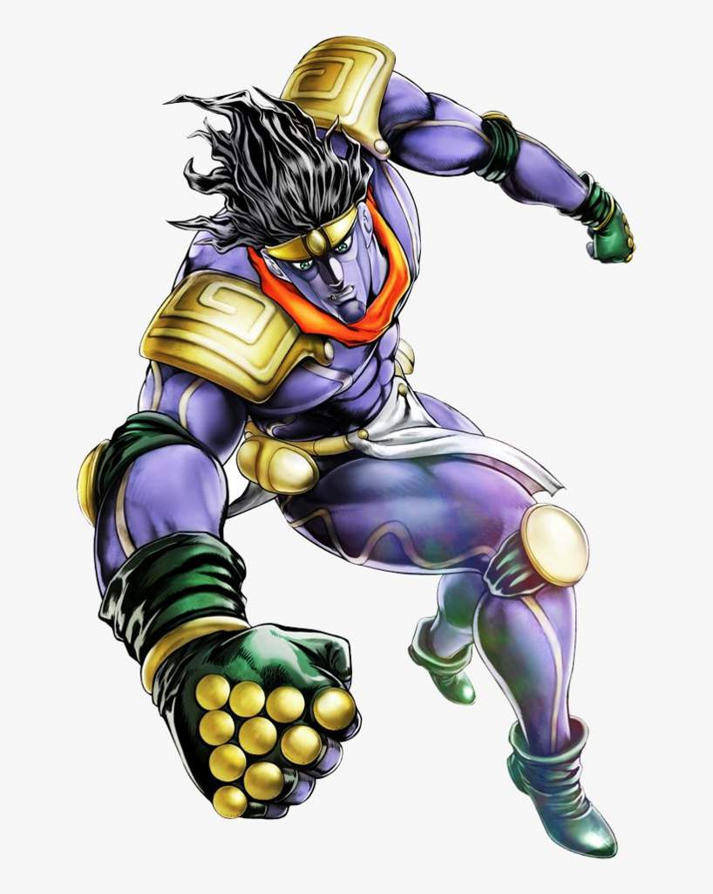
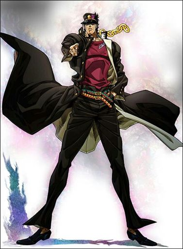

Джотаро Куджо (яп. 空条 承太郎 Ку:дзе: Дзё:таро:) — персонаж всесвіту JoJo's Bizarre Adventure, є головним героєм третьої частини манги Stardust Crusaders і одним з діючих персонажів у четвертій і шостій частинах манги — Diamond Is Unbre Ocean.
З'являвся у 5 різних екранізаціях, а також у ряді японських ігор жанру екшен та файтинг. Один з найвідоміших персонажів із всесвіту JoJo.
Зокрема, він з'являється як головний герой у більшості існуючих екранізацій та ігор, створених за мотивами JoJo's Bizarre Adventure і на обкладинках/постерах зазвичай зображується разом з головним антагоністом Діо Брандо.
Перед створенням персонажа, Хірохіко Аракі, автор манги був натхненний фільмом «Навколо світу за 80 днів», а також сценічним чином американського Актора Клінта Іствуда, який за словами актора «не біжить, його рухи мінімальні, він небагатослівний».
М'язова статура персонажа була створена під натхненням таких фільмів, популярних у 80-ті роки, як Рембо або Термінатор. Також Аракі прагнув створити персонажа, не схожого на головних героїв із попередніх двох частин манги.
Так Джонатан Джостар виглядав надто правильним і серйозним, а Джозеф Джостар дуже божевільним. Детаро замислювався, як незалежний герой, здатний впоратися із завданням і без підтримки союзників і навіть навпаки, герой досить сильний, щоб союзники покладалися на Детаро, який має одночасно високий інтелект і дисципліну, виступає в ролі лідера команди та його компаса. З іншого боку Детаро повинен був випромінювати жахливу ауру, «навіть коли він лише тримає руки в кишені». p align="justify"> Особливу увагу мангака приділив зв'язку особистості персонажа з його зовнішнім виглядом так, щоб читач міг з першого погляду зрозуміти, що за особистість перед ним знаходиться і більше довіряти персонажу.
Водночас Аракі зауважив, що дуже важливо прописати і слабкі сторони персонажа, його обмеження, з якими він змушений миритися та вирішувати свої проблеми. Факт того, що Детаро, згідно з сюжетом, ховається в тіні слави його дідуся — є фактором сильного психологічного тиску на героя, і водночас мотивує його на сміливі вчинки.
Аракі зізнався, що автору зазвичай складно наділяти своїх героїв недоліками, але це надає персонажу «тривимірність»; глядач повинен йому співпереживати і бачити, як персонаж морально і фізично розвивається на краще.
Представляючи Детаро Кудзе глядачеві, Аракі навмисно продемонстрував контраст між тим, яким герой був слухняним у дитинстві і став бунтарем, створюючи посил, що за цей проміжок часу «щось сталося».
Щоб підкреслити, що Детаро, на відміну попередніх героїв Джонатана і Джозефа, перестав бути героєм минулої епохи, а сучасним персонажем, Араки одягнув Детаро в костюм, що нагадує японську шкільну форму.
Star Platinum
 Star Platinum (Star Platinum) це стенд Джотаро Куджо, що спочатку з'явився в третій частині серії Неймовірні пригоди ДжоДжо, Хрестоносці зоряного пилу. Він також з'являється в четвертій частині, Незламний алмаз, і шостої частини, Кам'яний океан.
Star Platinum — гуманоїдний стенд ближнього бою з винятковою силою та швидкістю, що одержав здатність зупиняти час під час бою з ДІО. На момент початку шостої частини його здатність є найсильнішою серед стендів. Переважна сила Star Platinum у поєднанні з бойовою майстерністю Джотаро роблять його одним із найсильніших і найзнаменитіших стендів у серії.
Star Platinum - гуманоїдний стенд, схожий на високу, мускулисту людину, навіть більше, ніж сам Джотаро. У кольоровій манзі він часто має відтінок між фіолетовим, синім, зеленим та трохи золотим. Його обличчя та тіло мають різний колорит.
У нього довге розпущене волосся. Над очима і перенісся темніший відтінок шкіри, що стирає грань між волоссям і обличчям. Простір під очима, на щоках і підборідді темнішого фіолетового кольору і чітко відокремлені від ділянок навколо носа та рота. На голові є якась подоба козирка від кепки (яка є і в його господаря), над яким розміщено металеве оголов'я з трьох частин, центральна частина якого має форму вертикального еліпса. Спочатку його риси обличчя були дуже схожі на самого Джотаро.
Історія

Джотаро народився 1970 року в Японії в сім'ї Садао Кудзе та Холлі Джостар. Своє дитинство провів у Японії і виріс хуліганом та бунтарем, виявляючи повну неповагу до інших і провокуючи людей на бійки, щоб потім побити до напівсмерті.
Після пробудження Діо Брандо в 1987 році у Дзєтаро прокидається сила стенду, проте молодий чоловік думає, що «одержимий злим духом» і добровільно йде до в'язниці, і після приходу матері з дідусем Джозефом (головний герой минулої частини) показує, як його «злий» може ловити кулі, стріляючи собі в голову. Після того, як він дізнається про природу "суперсили", Детаро вчиться закликати стенд. Після повернення Діо Холлі почала повільно вмирати через нестабільну силу у своєму тілі.Так Детаро починає подорожувати країнами сходу, починаючи з Гонконгу, Сінгапуру, Калькутти (Індія), Карачі (Пакистан) і закінчуючи подорож до Каїру. Під час подорожі до нього приєднуються школяр Норіакі Кокоїн, француз Жан-П'єр Польнарефф, медіум Мохаммед Абдул та пес Іггі. Під час фінальної битви Детаро виявляє, що його стенд здатний зупиняти час.
У 4-й частині він другорядний персонаж, йому 28 років, і він захищає докторський ступінь і співпрацює з компанією «Фонд Спідвагона». На момент подій Diamond is Unbreakable приїжджає до міста Моріо, щоб розслідувати таємничу появу нових власників стендів, а згодом допомагає героям знайти серійного вбивцю.
До 2011 року (6 частина) Детаро вже 40 років, і він стає океанологом, переїжджаючи до США, де виховував дочку Джолін Кудзе, яка завдяки Детаро набуває надздатності і згодом стає головною героїнею 6 частини. Пізніше він намагається забрати Джолін із в'язниці, і в результаті цього з'являється стенд на ім'я White Snake, який краде у Дзєтаро його стенд і пам'ять, перетворивши їх на диски. Джолін намагається врятувати батька, бо без них Детаро загине. У результаті Детаро гине у битві з Пуччі, намагаючись врятувати Джолін.